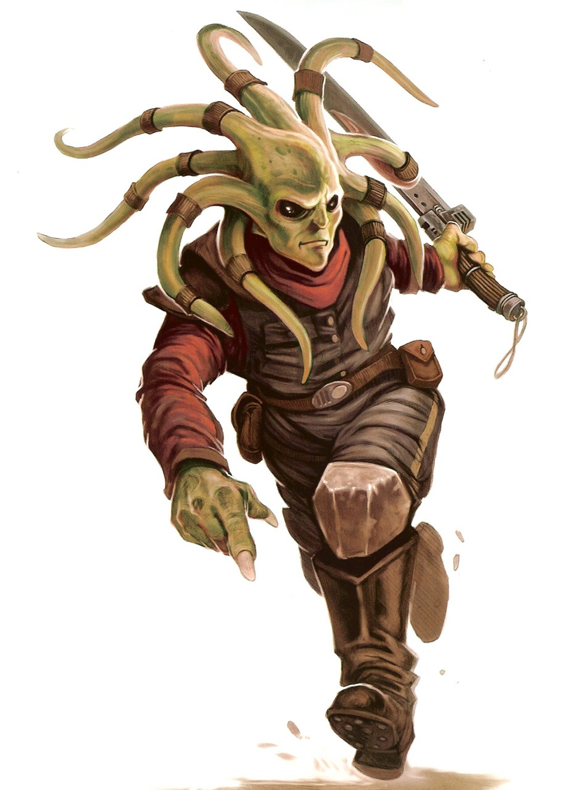

Nautolan
nautolan
Special Abilities: Nautolans begin the game with one rank in Athletics. They still may not train Athletics above rank 2 during character creation.
Amphibious: Nautolans may breathe underwater without penalty and never suffer movement penalties for traveling through water.
Nautolans are an amphibious species native to Glee Anselm. They are renowned for empathetic and cheerful natures and for enjoying everyday activities. Though generally peaceful, they are also tough and strong.
Nautolans are a natively aquatic humanoid species capable of breathing underwater. Webbed toes and fingers aid them in swimming through the depths. A dense cartilaginous support network combines with a bony endoskeleton to make them exceptionally tough. Lengthy green tendrils emerge from their heads, serving as sensory organs that detect the pheromones of nearby sentients. Their large black eyes are adapted to pierce the murkiest underwater environments. However, Nautolans are capable of surviving for extended periods on dry land.
Nautolans are an egg-laying species. When hatching, they emerge from the eggs as tadpoles. Arms, legs, and head-tails begin to emerge during the second year of life, at which point they are roughly the same size as a human infant. Initially, these limbs are not strong enough to support their weight on land, so most spend their early years in aquatic environments.
An elected Council of Elders forms the centralized government for Nautolan settlements. On Glee Anselm, representatives from each settlement cooperate to form an overarching centralized government. Notably, "elder” is a title of respect, as representatives are elected based upon merit rather than age.
Nautolans mate for life and are extremely loyal to their families. Both parents contribute equally to raising their young. Historically, Nautolan parents arranged marriages for their children, but in modern times this has become much less common.
Nautolan moods often reflect those of nearby sentients due to the pheromone sensitivity of their tendrils. As a broad generalization, Nautolans are happy and free-spirited, particularly when given an opportunity to pursue their interests. However, when confronted with anger or despair, members of this empathetic species are prone to respond iri kind.
Glee Anselm is a Mid Rim world filled with a broad range of aquatic environments. Its few landmasses are largely archipelagos. While Nautolans evolved in Glee Anselm's oceans, another unrelated species—the Anselmi—arose to dwell upon its land-masses. Constant fighting over the land turned the Anselmi into a warlike people. This has led to many conflicts throughout the world’s history.
Nautolans’ native language is Nautila, which was originally created for underwater use. In atmosphere, the language is largely unpronounceable, as it is dependent upon pheromones that are dispersed through the water in conjunction with spoken sounds. Consequently, Nautolans invariably learn to speak another language, most commonly Basic or Anselmian.
Many Nautolans recognize the significance of the Force, and there were numerous Nautolan Jedi. However, the Force does not play a central role in Nautolan culture.
The Nautolans are one of several species to evolve sharing their planet with another sentient species. Some of these species, such as the Utai and the Pau'ans, evolved to live together in harmony. Unfortunately, the Nautolans and the Anselmi have not been so lucky.
The Anselmi evolved as a land-based species on an oceanic planet. Thus, their entire history has been spent in intraspecies warfare over the few landmasses available. Meanwhile, the Nautolans developed unmolested in the oceanic depths. As the Nautolans adapted to an amphibious lifestyle, their numbers and natural strength gave them crucial advantages against the severely depleted Anselmi. After centuries of conflict they dominate Glee Anselm, leaving the Anselmi marginalized and torn by warfare.